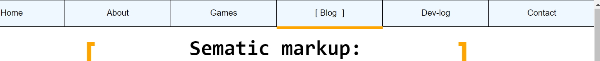

It's been a while since I did any high level design work on my website. It's time to dive back I and take a critical look the user interface (UI) and the user experience (UX) of the website. What is good, what is bad and what can I do to fix it?
Delivering a good UX is critical to making a good site. Well sort of. The user experience is a confluence between the experiential and emotional affects of interacting with an artifact as well the context where in this interaction takes place [1]. The experience that a user has while using an artifact has a clear impact on their engagement engage with it and how they evaluate it's quality after using it [1][2]. Delivering the desired experience will result in the website evoking the intended response. UX is especially important for a portfolio website like mine because, let's face it, you have no real reason to be here. There is not task you need to accomplish on this site, I'm just doing the best I can to entertain you.
No, please don't go!
As much as one can try to make a good UX - the experience itself lies with the user. But that doesn't mean that UX isn't my responsibility. As a designers I must create the context for a certain experience to take place [1]. The user interface (the interface between the cite and the user - shocking I know) and the general tone, structure and style of the site give me good opportunities to do this.
Okay that's all well and good - but how have I don't with the UI and UX so far. In this article I'm going to take a look at how I have succeeded, how I have failed and what I can do to make things work
I have been mindful of the UX from the start - literally. When first land on the website they are greeted by a glorious "hello world" message which smoothly slides away to reveal the homepage. This opening sequence starts things off on a good note, making the site appear intreating, exciting and well-made (I hope). First impression are critical because they establish the context for further engagement[2]. Web usurers seldom change their opinion of a website after continued use (provided there are not glaring issues) and will often form this opinion in as little as 50 milliseconds[2].
All links move and change with CSS when the user hovers over them in one way or another. This makes it clear that an action is available - a good practice UI design - it's always a good idea to show the user what they can do [3]. Features like animations give a sense of energy and intrigue while improving communication. This 'juice' allows the user to navigate my site more easily and have more fun while doing it!. Those links really do feel satisfying to click, don't they?
Users can experience all of the section of my website by simply scrolling. It's that easy. They don't have to click any links to see blog and games and other interesting sections. it's all right there for them to enjoy. Scrolling is effortless digital navigation. it makes pages on the site feel closer to each other rn space and time which should make users more comfortable while traversing my hypertext [4].
Does this mean the UI navigation is good?
Yes! It's great. It's super easy for users to get to games, blog post and any other pages they with to visit. It's al right there for them.
But does that make it good?
Ummm, yes. I just said it did. The reader do here to read this afer all didn't they. The mere face that this is con screen roves my point.
Oh my sweet summer child...
This whole website is one great big Norman Door.
A what-now?
A really bad door. A door that requires the user to ack against there logical instincts and expects them to do the opposite of what it implies they should do [3].
But this is a website, not a door. I don't understand.
And neither do the users!
But I can navigate perfectly.
Of course you can you twat! It's your site - the rest of us are utterly baffled!
And who are you anyway?
Who am I? I am the user. The nameless user whom you claim t center your design around.
I have been stuck on this page for three week and I a have no clue how to get back to the home page. Your site is like a door with two pull handles. Coming in is great but going back out again is completely confusing.
The return button is always floating somewhere in the middle of the article and I have to scroll around to find it.
You know you can just return each section with the nav-bar, right?
And how in the blazes would I go about doing that?
Click the section which is already highlighted?
You must be pulling my leg?
Fix this NOW!
As for this 'juicy CSS' of yours. Communication doesn't mean anything if you don't communicare cum lingua consistent!
Err... what?
Communicate with consistent language!
But I though I-No. No you don't.
One minute [this] is a button. The next it's some random decoration!
Headings, links and nav sections all look different. The layout keeps changing fraom section to section. Just as I learn where things are on one page I go to ne next and everything changes.
Making your user relearn things again and again is frustrating and tiring for them[5]. It is the opposite of a good user interface and a good user experience. Adhering to you own standards and conventions will make your site easier to understand. Users will need to spend less time yanking on push doors trying to return to your home page and more time strolling around, oblivious to doors, and admiring the view.
It's all well and good to make a great first impression but good UX and UI often goes unnoticed [1][3] - as it should. An action should be effortless.
On the other hand, just one interaction is enough to aggravate and frustrate the user[1]. Once they have a bad impression of your site it'll probably stick [1][2]. Once users associate your site with frustration and navigation difficulties they'll be unlikely to come back - the digital space will hold negative connotations[4].
But How am I meant to know if user experience is good or bad?
Ask me you Muppet!
… that's what I'm doing
Not now you numpty! During testing.
How many people did you test this site with during development?
None
Exactly. Show your site to others. See what they like. See what they hate. See where they get stuck and fix it.
We have already been over this one.
When I finally found it it gave me an error 404. Please just make it work I've been stuck here for weeks.
Alright, I'm on it.